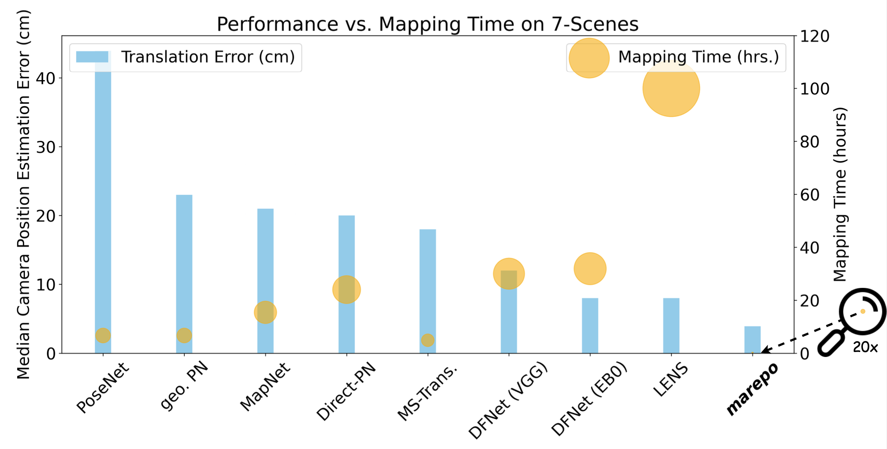

Map-Relative Pose Regression for Visual Re-Localization
CVPR 2024 (Highlight)
Abstract
Pose regression networks predict the camera pose of a query image relative to a known environment. Within this family of methods, absolute pose regression (APR) has recently shown promising accuracy in the range of a few centimeters in position error. APR networks encode the scene geometry implicitly in their weights. To achieve high accuracy, they require vast amounts of training data that, realistically, can only be created using novel view synthesis in a days-long process. This process has to be repeated for each new scene again and again. We present a new approach to pose regression, map-relative pose regression (marepo), that satisfies the data hunger of the pose regression network in a scene-agnostic fashion. We condition the pose regressor on a scene-specific map representation such that its pose predictions are relative to the scene map. This allows us to train the pose regressor across hundreds of scenes to learn the generic relation between a scene-specific map representation and the camera pose. Our map-relative pose regressor can be applied to new map representations immediately or after mere minutes of fine-tuning for the highest accuracy. Our approach outperforms previous pose regression methods by far on two public datasets, indoor and outdoor.

Comparison to APRs
Comparison to Structure-based Method ACE
BibTeX
@inproceedings{chen2024marepo,
title={Map-Relative Pose Regression for Visual Re-Localization},
author={Chen, Shuai and Cavallari, Tommaso and Prisacariu, Victor Adrian and Brachmann, Eric},
booktitle={CVPR},
year={2024}
}